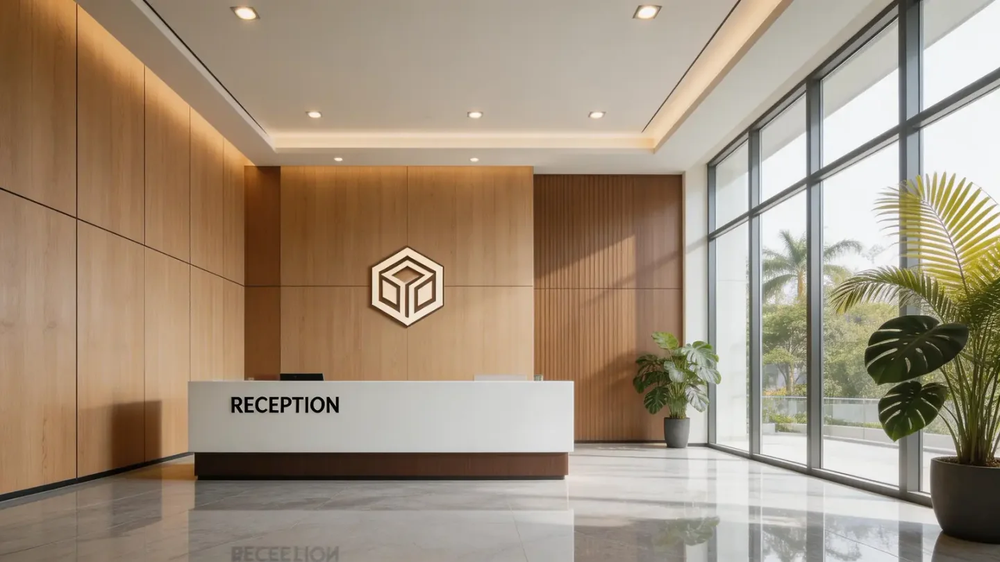

Office Lobby Wall Panels: Design and Project Buyer Guide
This office lobby case shows how to coordinate a decorative wall-panel focal point with company signage, reception furniture, circulation, lighting and project-level durability checks.

An office lobby works best when the wall panel defines a clear focal zone behind the reception or company sign, while the remaining materials support circulation and maintenance. The panel, signage and lighting should be detailed together so that fixings, wiring and access do not become site improvisations.
1. Choose one primary arrival view
Identify what visitors see from the entrance and lift. The strongest wall should carry the company identity or reception focus. Decorative panels can give that surface depth, but they should not compete with wayfinding, doors and multiple unrelated accent walls.
Confirm the viewing distance and camera angles used for visitor photos or corporate content. A large profile may read well from across the lobby, while a finer texture can be more suitable behind a reception desk viewed at close range.
2. Coordinate the logo as a separate system
A company sign may require concealed wiring, stand-off fixings, templates and access for maintenance. The wall panel is the visual background, not automatically the structural support. The project team must confirm the substrate and fixing points behind the decorative surface.
Prepare a coordinated elevation showing the logo centerline, panel joints, reception desk, lighting and power route. This avoids cutting through important profile lines after installation.
3. Balance appearance with high-traffic use
Lobby walls may face luggage, carts, cleaning equipment and frequent touching. Decide which zones need more robust finishes, protective skirting or easier replacement. The surface cleaning method should be checked for the exact product instead of assuming every decorative panel accepts the same chemicals.
At corners and passages, use planned trims and protect exposed edges. If the focal wall continues into a corridor, record where the finish stops and how the transition is handled.
4. Approve samples under project lighting
Review color, gloss, profile depth and joint appearance with the intended lighting temperature. Signage illumination may make a surface look warmer or more reflective than it appears under warehouse light. Keep an approved labeled sample tied to the order code.
For a multi-floor office program, organize cartons by floor or area and retain the batch record. A clear receiving schedule reduces the risk that similar finishes are installed in the wrong zone.
Buyer checklist for an office lobby package
- Entrance and lift arrival views
- Reception desk and company-logo elevation
- Logo fixing, power, wiring and maintenance access
- Panel profile, joint direction and edge details
- High-traffic zones and cleaning expectations
- Approved physical sample under project lighting
- Destination and project documentation requirements
- Area labels, batch records and replacement reserve
Questions buyers ask
Can decorative panels support a company logo wall?
They can form the background, but the logo fixing, load, wiring, access and substrate must be designed as a coordinated system.
What should be included in an office lobby sample review?
Review the full panel profile, surface, joint, trim, lighting effect, cleaning method and interface with signage or reception furniture.
How should cartons be organized for a multi-area project?
Use clear product codes and area or floor labels, supported by a packing list that separates finishes, profiles and trims.
Build a lobby panel and signage coordination checklist.
Send the country, wall elevation, brand-wall reference, preferred finish and estimated quantity. Luvie can help structure the sample, trim and order discussion.
WhatsApp +30 6947135317